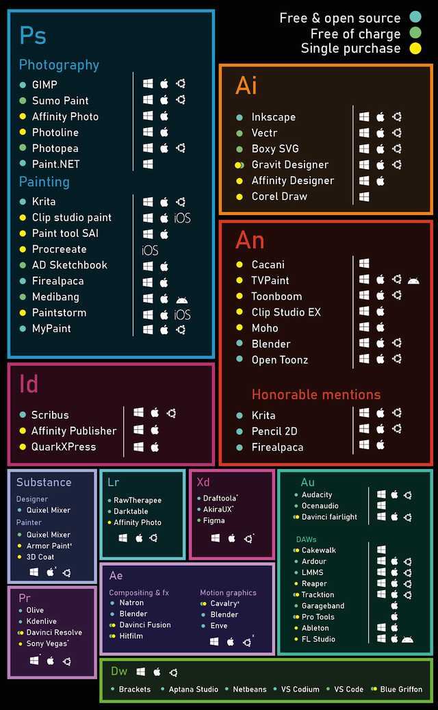
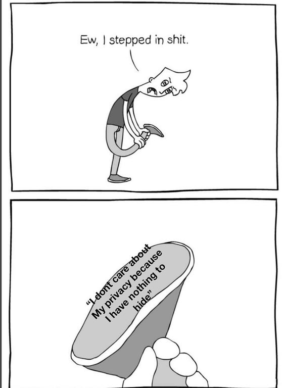
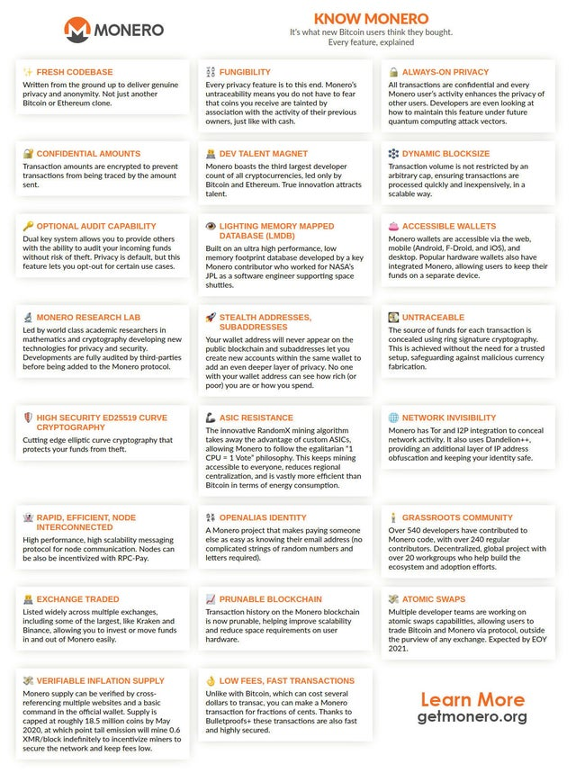
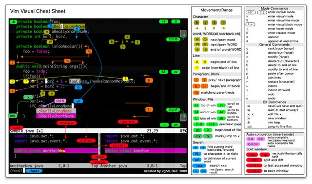

Moon1789
Average GNU/Linux , Piracy , Privacy and F(L)OSS Enjoyer.
What's This?
About Me
Random person on the internet who likes humor and technology.
I use arch btw.
Big companies bad (especially facebook) , I dislike windows and mac os.
Proprietary software and DRM (Like seriously , I dont own the stuff which i pay for?) are poo.
Chromium bad and bloated , Vivaldi's UI is good , I like firefox (I use LibreWolf instead.) , Surf based.
Mobile phones are a very good way to track people.
Terry A Davis , Richard Stallman , Linus Torvalds , DWM devs and other good open source license enjoying devs are chads.
My works
AmogOS (Chad AmogOS vs bloated mainstream distos).
Moosik (Rip off of Chilling Music and spotify because both are bad).
This site dosent use javascript because meh.
Also get rekt dark mode users.
Images







Last Edited on 29-01-2022.